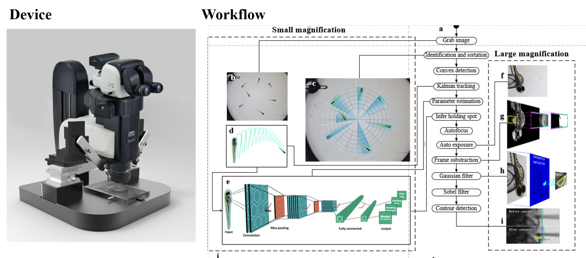

Zebrafish Larva Morphology Analysis
 Illustration
Illustration
The capability to directly deliver agent into the heart inside a single vertebrate is important for understanding organs activities, tissues regeneration, and developing disease models and therapeutic approaches. Despite recent success in exploiting robots to perform injection of cells, embryos, and small animals, it remains challenging to automatically achieve intracardial agent injection due to its inaccessible position, inappropriate immobilization force, and inaccurate localization. Here my labortory develops a high-throughput in vivo heart injection system which enables intracardial agent delivery of a single zebrafish larva in less than fifty seconds. This system not only consistently orients the zebrafish to a pre-designed posture but also provides a controllable capture and injection technique to regulate the deformative injury. Horizontal projection and space height of zebrafish heart are determined with micrometer resolution. To illustrate the power of our system, we have injected several classes of agents and analyzed the results which correlate well with known mechanisms of actions in mammals.
This video illustrates the workflow of the algorithm here (updated in 07/2019):
The device and schematic of the micromanipulation system is shown in the following picture. 
The objective of zebrafish larva morphology analysis algorithm is to
- detect the larval posture;
- extract its orientation and belly direction;
- give visual feedback to the mechanical device to rotate the object to the desired posture;
- calculate the inhaling position and drive the manipulator to capture the object.
The difficulties inlude
- uneven illumination;
- noise distractions, such as bubbles, excretion, and small particles, which could cause troubles for extracting the contour of the object;
- morphological variations for different objects with various ages, sizes, contours;
- requirements for high processing speed, which means the visual feedback algorithm needs to achive a bandwith of at least 40 fps.
This algorithm used a range of traditional image processing techniques to achieve robust, accurate, and fast morphology analysis. The workflow is illustrated as follows:

- Select the region of interest (ROI)
- Denoise with Gaussian filter and Gaussian filter and Gaussian bilateral filter, where the point is how to cancel the noise without eroding the contour. Confronted with this difficulty, I combine two types of filter.
- Adaptive thresholding to extract the foreground while address the uneven illumination.
- Median filterring and contour extraction.
- Cut the contour into two parts, compare the curvatures of each one to determine the belly side.
- Calculate the direction and the degree needed to rotate the object to the desired posture.
- The mechanical device, a stepper motor, drives the object into the ultimate position with P control.
- Reach the desired podture.
- Adaptive thresholding.
- Median filterring.
- Contour extraction.
- Calculate the inhaling position, painted in a red point.
This algorithms achieves
- success rate: 98% for larvae aged between 1 dpf to 4 dpf.
- accracy: <3 deg.(orientation) <5 pixels (inhaling point)
- bandwidth: >40 fps
It works effectively for larvae aged between 1 to 4 dpf with various morphological features. Furthermore, this project has applied for 4 patents.
Supervisor: Prof. Huijun Gao, IEEE Fellow and Professor of Department of Automation, Harbin Institute of Technology
Chunxiang Wang
Postgraduate student of Control Science and Engineering
His research interests include image processing, deep learning, adaptive Kalman Filter, and robotic micromanipulation with its biomedical applications.